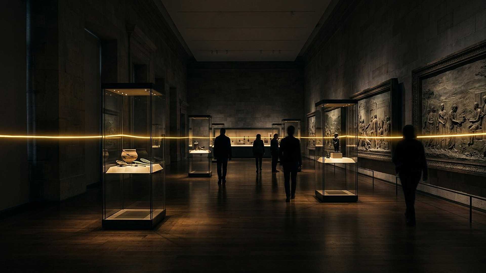

Accomplissement : 539 av. n. è. : Cyrus prend Babylone, l'Euphrate détourné.
Écart annonce → accomplissement : ≈ 150 à 200 ans.
Jalon de vérification : Cylindre de Cyrus, British Museum n° BM 90920.

Salle 16 — La synthèse
« Souvenez-vous des choses passées, dès les temps anciens (…) j'annonce dès le commencement ce qui doit arriver. » — Isaïe 46:9, 10 (d'après Crampon 1904)
Reconstitution numérique — le fil d'or qui traverse le musée.
Tout le musée tient sur cette page : chaque prophétie, son annonce datée, son accomplissement, l'écart entre les deux, et le jalon qui permet de vérifier. Filtrez par statut, cherchez un mot, ouvrez chaque ligne. Les écarts vont de quarante ans (Jérusalem en 70) à plus de deux mille ans (Daniel 11, en cours) — et la dernière ligne reste ouverte, vers ce qui vient.
14 prophétie(s) affichée(s).
Accomplissement : 539 av. n. è. : Cyrus prend Babylone, l'Euphrate détourné.
Écart annonce → accomplissement : ≈ 150 à 200 ans.
Jalon de vérification : Cylindre de Cyrus, British Museum n° BM 90920.
Accomplissement : Sièges de Nébucadnetsar puis d'Alexandre (332) ; la ville insulaire devient presqu'île.
Écart annonce → accomplissement : ≈ 250 ans et au-delà.
Jalon de vérification : Géomorphologie de la chaussée d'Alexandre (revue PNAS, 2007).
Accomplissement : 612 av. n. è. : chute sous l'eau et le feu ; site oublié jusqu'au XIXᵉ s..
Écart annonce → accomplissement : ≈ 50 ans.
Jalon de vérification : Chronique de la chute de Ninive, BM 21901 ; la crue reste DÉBATTU.
Accomplissement : Peuples édomite et philistin disparus ; Égypte durablement abaissée.
Écart annonce → accomplissement : de quelques années à quelques siècles.
Jalon de vérification : Ashkelon détruite en 604 (BM 21946) et ses cendres fouillées.
Accomplissement : Soixante-dix ans de désolation puis retour en 537 (chronologie biblique ; 587/586 en chronologie profane).
Écart annonce → accomplissement : 70 ans exactement, selon la lecture retenue.
Jalon de vérification : Tablette des rations de Joïakin, VAT 16378 (Berlin).
Accomplissement : Babylone → Médo-Perse → Grèce → Rome → puissance divisée ; la Pierre reste à venir.
Écart annonce → accomplissement : ≈ 2 500 ans de succession.
Jalon de vérification : Daniel 8 nomme lui-même la Médo-Perse et la Grèce.
Accomplissement : Guerres des Lagides et des Séleucides au détail près ; duel prolongé jusqu'à l'époque actuelle.
Écart annonce → accomplissement : plus de 2 000 ans.
Jalon de vérification : Pierre de Rosette, British Museum n° EA 24 (196 av. n. è.).
Accomplissement : Iᵉʳ s. de n. è. : naissance à Bethléem, ministère, trahison à 30 pièces, poteau, tombeau d'un riche.
Écart annonce → accomplissement : jusqu'à ~700 ans pour Isaïe 53.
Jalon de vérification : Tacite, Annales XV.44 ; antériorité du rouleau d'Isaïe (1QIsaᵃ).
Accomplissement : 455 av. n. è. + 483 ans = 29 de n. è., baptême du Messie ; milieu de semaine en 33, fin en 36.
Écart annonce → accomplissement : 490 ans au total, calculés.
Jalon de vérification : Le synchronisme de Luc 3:1 (15ᵉ année de Tibère) ; point de départ DÉBATTU.
Accomplissement : 66 : retrait romain et fuite à Pella ; 70 : palissade, famine, temple rasé.
Écart annonce → accomplissement : ≈ 40 ans.
Jalon de vérification : Josèphe, témoin du siège ; arc de Titus à Rome.
Accomplissement : Concordances établies entre 1377 (quarantaine) et le XXᵉ s. (terre photographiée de l'espace).
Écart annonce → accomplissement : des millénaires d'avance sur la vulgarisation.
Jalon de vérification : Chaque panneau cite sa source moderne datée ; un panneau À NUANCER assumé.
Accomplissement : Octobre 1914 selon le calcul des 2 520 ans ; signe composite depuis (guerres mondiales, famines, pestes…).
Écart annonce → accomplissement : 2 520 ans.
Jalon de vérification : Calcul étiqueté LECTURE PROPHÉTIQUE ; chiffres uniquement d'organismes officiels.
Accomplissement : 1920 : Société des Nations ; guerre : « n'est pas » ; 1945 : Nations unies (Charte du 26 juin, en vigueur le 24 octobre).
Écart annonce → accomplissement : ≈ 1 900 ans.
Jalon de vérification : Dates publiques sur le site officiel de l'ONU ; identification = LECTURE PROPHÉTIQUE.
Accomplissement : Paix et sécurité → Babylone la Grande → Gog → Armaguédon → 1 000 ans → paradis.
Écart annonce → accomplissement : aucune date — Matthieu 24:36.
Jalon de vérification : Présenté comme espérance, non comme fait ; nuances récentes intégrées.
Tout le musée tient sur cette page : quatorze prophéties alignées sur un même fil d'or, chacune avec son annonce datée, son accomplissement, l'écart entre les deux et le jalon qui permet de vérifier. Filtrez la frise par statut, accomplies, en cours, à venir, ou cherchez un nom : Cyrus, Tyr, 1914. Les écarts s'étendent de quarante ans à plus de deux mille ans, et la dernière ligne reste ouverte vers ce qui vient. Prenez le temps d'ouvrir les lignes qui portent la mention débattu dans leurs salles : la crue de Ninive, la date de la destruction de Jérusalem, le point de départ des soixante-dix semaines. Un musée honnête montre ses coutures, et c'est à vous, maintenant, de peser l'ensemble avant la salle du verdict.
Trois garde-fous ont été appliqués partout : les interprétations sont étiquetées LECTURE PROPHÉTIQUE quand elles dépassent le fait d'archives ; les points discutés portent DÉBATTU dans leurs salles (la crue de Ninive, 607 contre 587/586, le point de départ des 70 semaines, « le cercle » d'Isaïe) ; et deux pièces dont les numéros d'inventaire n'ont pas pu être relevés ne sont publiées nulle part dans ce musée. La frise n'en est pas affaiblie : elle est vérifiable.